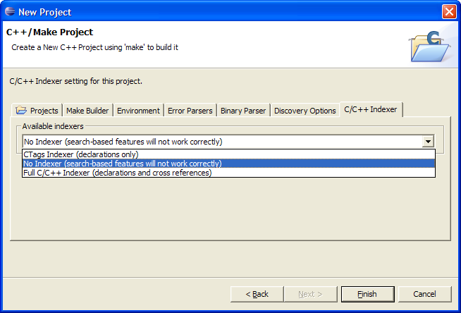

Indexing a large project
Although any indexer can be used to index an existing project at any
time, the following steps present a recommended
approach to importing large projects.
- Uncheck the Use default
button and browse to the root directory of your project

- In both Managed Projects and Standard Projects, you eventually
get to a page that contains the tab C/C++
Indexer
- Select No Indexer - this
will disable all indexing for now

- Click Finish to create the project
- Set your include paths either by manually entering the include
paths or, in the case of a standard make project,
performing a build
- Once the project has include path information, bring up the
project properties and select which indexer you wish to
use on the project.
By following these steps, you are making sure that the time spent
indexing will produce meaningful results.
C/C++ search
C/C++ Indexer
Full C/C++ Indexer
CTags Indexer
C/C++ Indexer Progress
Bar
Selection Searching for C/C++
elements
Enable/Disable the Full C/C++
Indexer
Enable/Disable the CTags
Indexer
Setting Source Folders

C/C++ search page, Search
dialog box
C/C++ Project
Properties, Managed, Indexer
C/C++ Project
Properties, Standard, Indexer